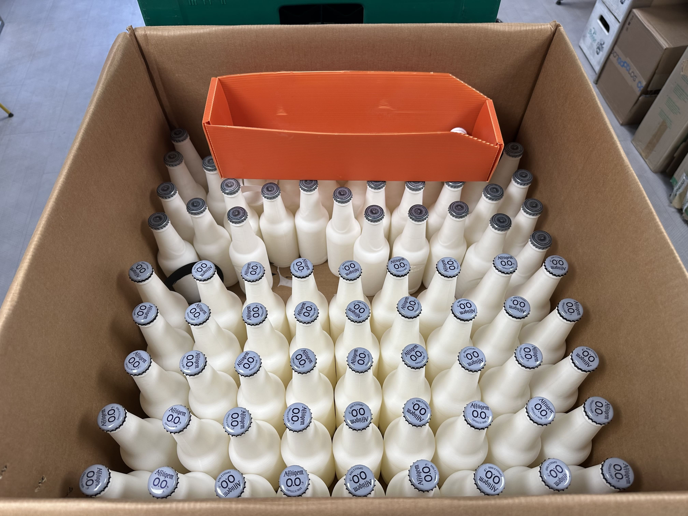

— LE DÉFI
Fiabiliser et accélérer les tests qualité sur les lignes de conditionnement haute cadence. Face à des packs tests historiques équipés de vraies bouteilles en verre, les lignes subissaient des casses répétées. Par manque de temps pour recréer un pack conforme au milieu du flux, les opérateurs continuaient parfois de faire tourner des packs brisés, annulant complètement la valeur scientifique du test.
— LE PROBLÈME TECHNIQUE & QUALITÉ
- Faux tests d'inspection : Le but du pack test est de vérifier le bon fonctionnement individuel de chaque capteur de présence de capsule. Si des bouteilles manquent ou sont brisées à l'intérieur du pack, tous les capteurs s'activent simultanément. Impossible alors d'isoler et de valider l'efficacité de chaque capteur un par un : le test ne servait plus à rien.
- Sécurité & Productivité : Risques majeurs de coupure (bris de verre au sol), pénibilité physique (port de charges lourdes pour les opérateurs) et détournement de packs marchands de la production pour pallier les casses.

— LES SOLUTIONS IMPLÉMENTÉES
- Initiative transversale : Proposition spontanée d'une solution innovante au service Qualité (hors périmètre d'origine) basée sur la fabrication additive.
- Conception & Test d'efforts : Modélisation 3D chirurgicale des bouteilles sur SolidWorks et simulation numérique des contraintes mécaniques pour garantir une résistance maximale aux impacts de la ligne.
- Éco-conception en PLA : Impression des bouteilles de substitution en PLA (biodégradable, ultra-léger et incassable à ce niveau de contrainte).
— LE RÉSULTAT
40 000 €
D'économies annuelles générées (Make or Buy) : Gain direct obtenu en évitant d'externaliser la production de ces pièces complexes, grâce à la maîtrise interne de la chaîne 3D.
- Qualité & Fiabilité : Restauration d'un protocole de test machine 100 % fiable (validation stricte et unitaire de chaque capteur) et suppression totale des biais de contrôle.
- Sécurité & Ergonomie : Élimination définitive du risque verre en usine et réduction drastique de la pénibilité pour les équipes de conduite terrain.